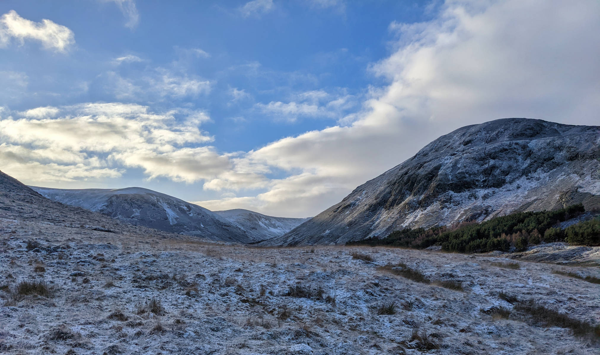
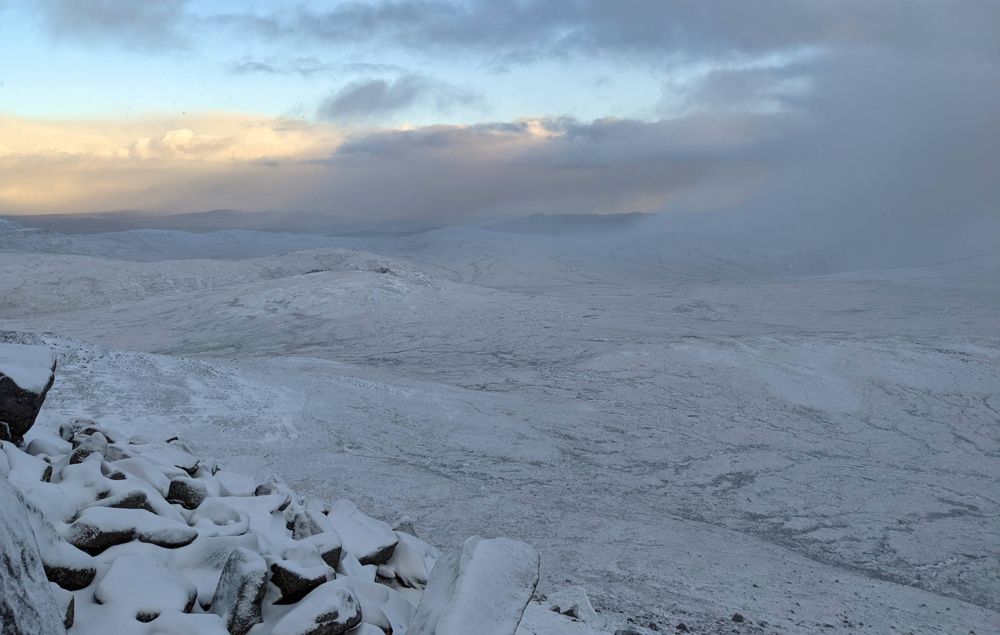
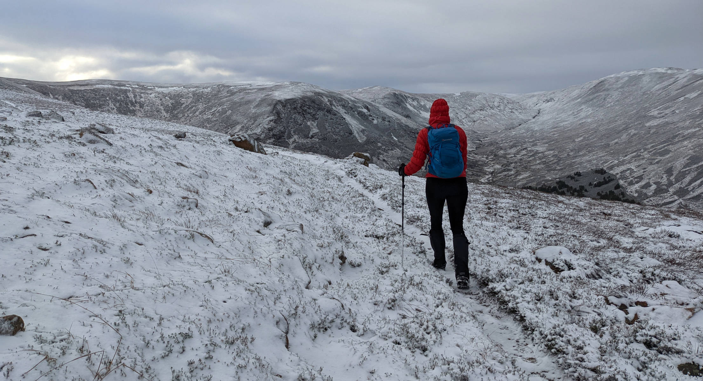
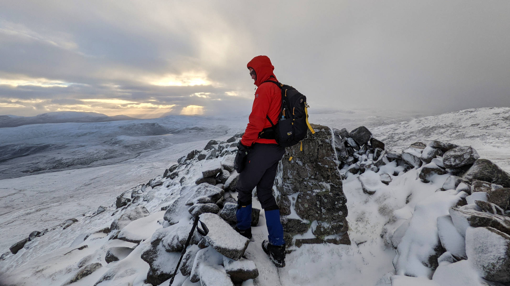
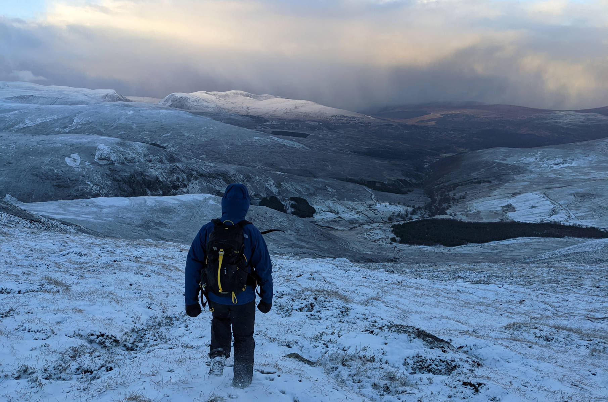

The first hill of 2022. No happier way to celebrate a new year than with a hike, and so we did.
After a period of cold and snow, we just had a few days of over 10 degrees, and thus it felt quite warm and everything was melting. Somehow, we missed the memo that it was going to be cold today, so +1 degrees on the car indicator and the snow through which we drove came as a bit of a surprise. But oh well, we had enough gear with us to be warm, you never know in winter so better safe than sorry and bring some extra!

We started from the Glencalvie lodge, from where a track took us up into Glen Calvie, following the river Calvie, through a magnificent Scots-pine forest, followed by a section of birch trees, all the while looking directly at a big white giant, Càrn Chuinneag. We knew the track was pretty good, so we brought the tandem bike along to help us through this section. The river was full from rain and melting snow which made for relaxing sound effects of the river Calvie.

We parked our bike at the last tree and started walking up. Clouds drifted in and out, sometimes bringing snow, sometimes just passing by. It made for wonderview vistas. With the snow everywhere it sometimes looked like the world had gone black and white. Our bright jackets would be the only source of colour.

We made it to the top, where it was cold and windy and we could just shelter between some rocks when a snow storm passed by and caused a 15 minute white out. We decided to not follow any paths anymore, but just head back in a beeline to the bike, which worked out great. We could feel it getting warmer as we went lower.

A wonderful frosty start of hiking season 2022!
